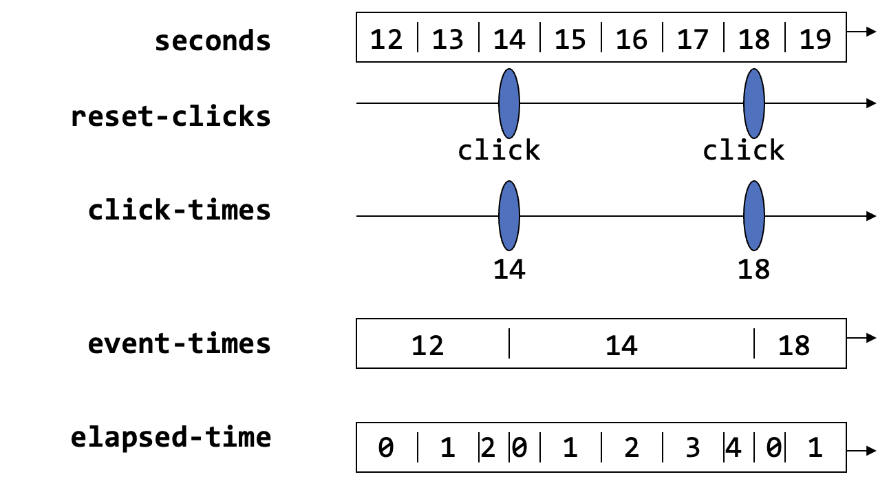

We can write the original timer program using FrTime’s GUI library. Here is the program, explained.
First we will write a simpler version that simply shows the elapsed time since the program began. To do so, we need to load the GUI library:
(require frtime/gui)
and then we need to determine how much time has elapsed. It may be tempting to write
(define init-time seconds)
(define elapsed-time (- seconds init-time))
and then make a GUI display object that presents this (after converting the number into a string):
(make-message (number->string elapsed-time))
When we run this, however, we get a rather disappointing display that seems to always show 0. That is because that’s what we asked for! We can check this by asking for the value of init-time in the REPL:
> init-time
When we do, we see that it is constantly changing. But that’s what we should expect: we defined it to be the same as seconds! Instead, we need to hold on to the value of seconds at the time we started the program: i.e., we do not want it to automatically update. For that, we instead write
(define init-time (value-now seconds))
and then the rest of the program works as we would expect.
Now let’s add the button. We create a button object, which returns an event stream of its clicks:
(define reset-clicks (make-button "Reset"))
Every time there’s a click, we want the elapsed time to reset to 0. That is, we want to keep track of when the reset occurred. Note that again we need to use value-now to get the time when it occurred, not the current time. We use map-e to map over event streams:
(define click-times (map-e (lambda (_) (value-now seconds)) reset-clicks))
So we have two kinds of events: the start of the program, and the clicks. We want a single behavior that reflects when these occurred: starting with when the program began, and updating whenever there’s a click. The function switch does this, “switching” the behavior’s value whenever an event occurs:
(define event-times (switch click-times init-time))
At this point, the elapsed time to show is how far the current time is from the last event:
(define elapsed-time (- seconds event-times))
Visually:

Putting this all together, and adding the output directive:
(define init-time (value-now seconds))
(define reset-clicks (make-button "Reset"))
(define click-times (map-e (lambda (_) (value-now seconds)) reset-clicks))
(define event-times (switch click-times init-time))
(define elapsed-time (- seconds event-times))
(make-message (number->string elapsed-time))
Observe that in this program, there are two kinds of changes that can occur:
In both cases elapsed-time updates, triggering a change in the output. But there are two inputs to the subtraction in elapsed-time, and they update for different reasons.
What may be lost in the above presentation, which is incremental to enhance readability, is that we actually have deeply nested expressions that we can think of algebraically. To make that clearer, here is the whole program written as a single expression, with each name replaced with the expression it was bound to (though this is almost certainly a less readable version):
(make-message (number->string
(- seconds
(switch
(map-e (lambda (_) (value-now seconds))
(make-button "Reset"))
(value-now seconds)))))
The interested reader can prove properties of the time shown based purely on the rules of algebra, perhaps even identifying a slightly unsatisfying behavior in the time shown by the timer (which was also a problem with the callback version).
This example shows that we really can compose expressions in a conventional manner even though we are writing a reactive program using a GUI library. It is worth comparing the structure of this program against the callback-based version that we started with.
This paper shows how the GUI library was given a functional-reactive interface by exploiting the encapsulation of object-oriented state.